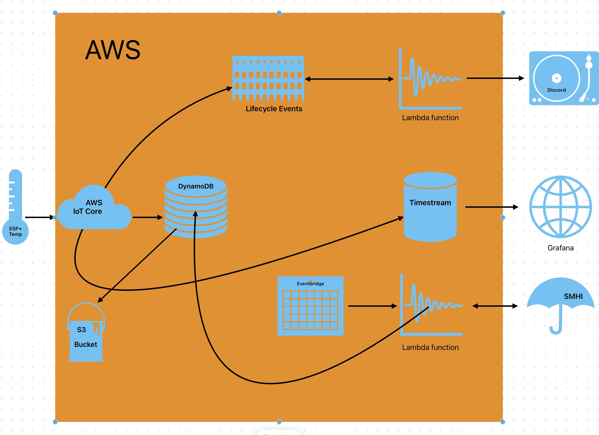

AWS IoT Core with Nodemcu V3-ESP8266
Table of content
About the project
This project aims to demonstrate how to use an esp8266 with a connected temperature sensor and hook it up to Amazon AWS in order to store and handle the data in various ways. It also pulls weather data from SMHI and stores it in DynamoDb as a separate device. Notifications are sent to my Discord when the device is connected or disconnected.
Hardware
- Nodemcu Esp8266 V3
- DS18B20 temperature sensor
- Cables
Overview

AWS functionality used:
- Save the data in DynamoDb
- Use lamdbda function to get external data from the web in the same database
- Using Amazon EventBridge Scheduler to run lambda function
- Lifecycle events to send device status to Discord
- Using timestream database to stream data to Grafana
Third party services used:
- Discord Webhook to receive ESP Connected/disconnected-notifications
- Visualizing the data using grafana, it could be done in AWS but it would generate a cost which is why i choose to do it in grafana
Instructions
Wiring
(Sensor) -> (Esp8266)
VCC -> 3V
GND -> GND
Signal -> D2
Installation
- Install the latest version of the Arduino IDE on your computer.
- Install the ESP8266 board package in the Arduino IDE by following the instructions here
- Install the ArduinoJSON library in the Arduino IDE library manager.
- Install the PubSubClient library in the Arduino IDE library manager.
- Install DallasTemperature library and its dependencies in the Arduino IDE library manager.
Setup
- Download the code for the microcontroller here and the secrets file here
- Sign up to AWS, create a user and open the IoT console here
- Follow the instructions here to create a thing and certificates
- Edit secrets.h and enter your THINGNAME, WIFI_SSID[], WIFI_PASSWORD[], MQTT_HOST[] and the 3 certificates created in the previous step
- Upload you code to the microcontroller and check the Arduino IDE serial monitor that you get what you expect
- Go to IoT core and "MQTT test client" subscribe to topic "esp8266/pub", wait a minute and make sure that you get the temperature and time.
*To get the MQTT_HOST you need the endpoint, go to the settings part of AWS Dashboard. Copy the endpoint from there to MQTT_HOST.
DynamoDb
- Search for DynamoDb in aws and click it
- Click on create table
- Give the table a name, partition key and a sort key. I choose partitionKey=device_id (String) and sortKey=EpochTime (Number)
- Go to IoT core->message routing->Rules and click Create Rule
- Give the rule a name and click next
- Enter sql statement: SELECT temperature, EpochTime, cast(topic(1) AS String) as device_id, FROM 'esp8266/pub'
- Rule actions choose DynamoDbv2, table name = choose your newly created table from step 3
- Create a IAM role, next and then create
- You should now see data comming each minute in DynamoDb->Explore items->"YourTableName"

Lambda functions
Fetch weather data from external url (SMHI)
- Search for and click Lambda in aws
- Click create function
- Use Author from scratch and give the function i name, i chose SmhiToDb and runtime=Node.js 20.x
- Click "Change default execution role" and use "Create a new role from AWS policy templates",
give it a role name and the Policy templates = Simple microservice permissions. Then create the function
- Replace the code source with this
- Change tableName to name given in step 3 above
- Click deploy, then test and give a test event name. Click Save
- Click test again and check Execution result logs to see if it succeeded
- You should now see one set of data from device=SMHI in DynamoDb
Send message to Discord
- Follow this guide
- Replace code source with this
- Deploy and configure/replace test event with this text
- Click test and you should get a notification in discord if all went well
EventBridge Scheduler
Create a scheduler that runs smhi lamdbda function at regular interval
- Search and click EventBridge
- Click Schedules on left side under Scheduler and create new
- Giv it a name and click recurring schedule
- use cron-based schedule and choose how often it will run
- Chose templated targets -> Aws lamdbda invoke, chose Lambda function from SMHI we created above from the dropdown
- Create new role or use existing, next next save.
Lifecycle events
Use Lifecycle events to trigger lambda function to send notifications to Discord
Setup two rules in iot core, one for device connected and one for disconnected.
SELECT * FROM '$aws/events/presence/connected/ESP8266'
SELECT * FROM '$aws/events/presence/disconnected/ESP8266'
Use action "Lambda: Send a message to a Lambda function" and choose the discord lambda function created earlier.
You should now get notifications in discord each time the device boots up or shuts down.
More info on Lifecycle events can be found here
Grafana
Create a timestream database
- Search and click Amazon Timestream in Aws, under resources click databases
- Click create database
- Chose standard datbase and give it a name
- Click create database
- Create a table
Create a rule that puts data to timestream db
- Search and click IoT Core in Aws, under message routing click rules, then create rule
- Give it a name and click next
- Sql: SELECT * FROM '+/pub' and click next
- Under action 1 select timestream table then choose database and table that we just created
- Dimension name = device_id & Dimension value = ${topic(1)}
- Create new IAM role
- Click next and then create
Create a grafana account and connect to timestream
- Go to grafana and sign up for a free account
- Click menu->Connections and search for amazon timestream
- Install amazon timestream
- In AWS search for and click IAM
- Click users and Create user
- Give a name and click next
- Choose Attach policies directly and add "AmazonTimestreamReadOnlyAccess"
- Click next and create the new user, then go in to that user and click the Security Credentials tab
- Click create access keys and then choose "Application running outside AWS" and next, give it a descripton and next again
- Write down the Access key and secret access key
- Go back to Grafana and choose datasources for amazon timestream and add access key & secret key
- set default region to same as aws, note that not all regions has support for timestream in aws
- Chose database, table and measure from dropdown and click save and test
- You should now be able to visualize your data in grafana
Files can be found at my github repo here